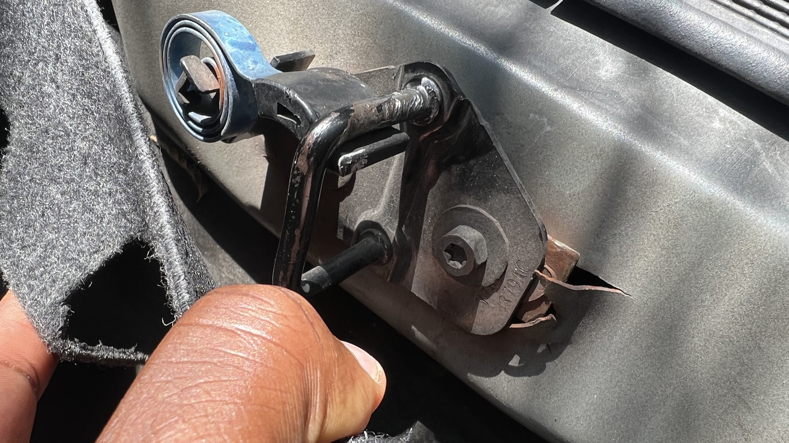
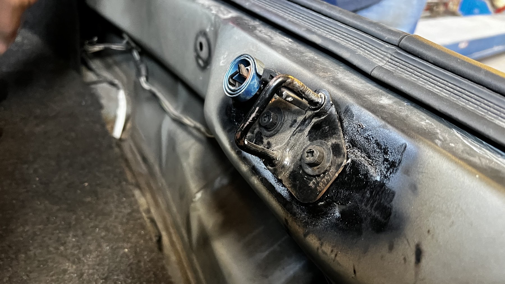
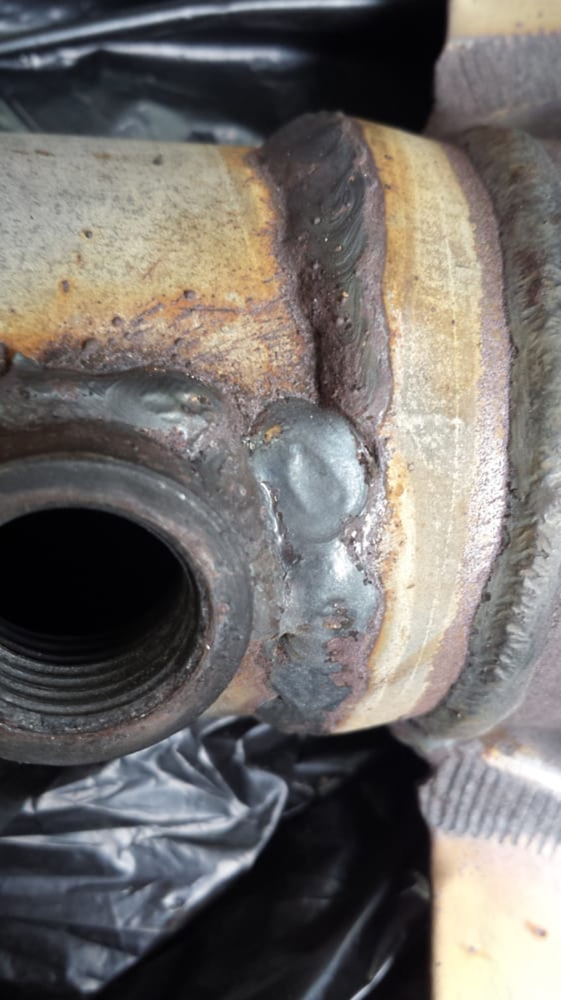
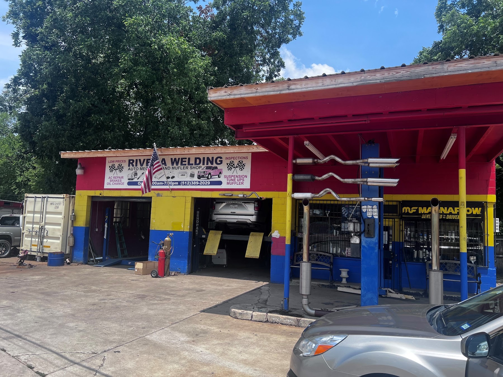

Rivera Welding Auto Mechanic is a short drive from Del Valle, at 3528 E 7th St in East Austin. Mufflers, catalytic converters, welding and everyday repairs, walk-ins welcome.
New mufflers, pipes and tips, or a full exhaust system. Parts are often in stock, so many jobs are done the same day.
Converter stolen or failed? One customer's stolen converter was replaced in under an hour, with no appointment.
Welding is in our name. If something on your car has broken or come loose, bring it by and we'll take a look.
Squeaks, grinding or a rough ride. We put it on the lift and find what's wrong.
When the A/C quits in an Austin summer, bring it in and we'll get it checked.
The everyday work that keeps your car running, from a tune-up to a synthetic oil change on a work truck.




I have had this shop weld not only exhaust components, but also suspension components on multiple vehicles. I have come in multiple times without an appointment and they have gotten me in and out quickly all while charging very reasonable prices. Will definitely always have my welding work done by these guys!
Excellent service, willing to work within my budget and excellent mechanic, had a blown catalytic converter and was in and out in 1 1/2hrs. Car runs great now. I will be using them again in the future.
Took in my truck to weld part of my suspension without an appointment. They had me in and out within 2 hours. The welding looks great!
Yes. Rivera Welding Auto Mechanic serves drivers from Del Valle and nearby Govalle, Holly, Montopolis. Call (512) 389-2029 or just pull in.
Pull in without an appointment. Many exhaust and catalytic converter jobs are done the same day. We're at 3528 E 7th St, Monday to Saturday.
Pull into 3528 E 7th St without an appointment, or call (512) 389-2029 first. Many exhaust jobs are done the same day.
Rivera Welding Auto Mechanic is rated 3.9 from 121 Google reviews. Customers mention quick turnarounds, walk-in service, fair prices on exhaust work and welding that holds up.
Also serving: Govalle · Holly · Montopolis · Mueller